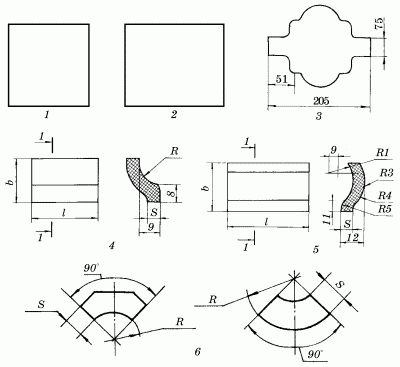
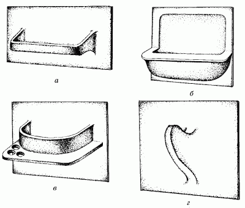

Облицовка стен плиткой.

К сожалению, в настоящее время, когда выбор отделочных материалов огромен и разнообразен, далеко не все могут позволить себе облицевать стены кухни или санузла высококачественной плиткой от зарубежных производителей. Применять водостойкие материалы низкого качества тоже, разумеется, нежелательно. А вот широкий ассортимент доступных по цене моющихся обоев и пленочных покрытий обеспечивает неплохую альтернативу облицовке стен кафельной (керамической) плиткой. Действительно, в последние годы отделка стен подсобных помещений обоями все еще остается популярной: налицо экономия финансовых средств и времени, а по внешнему виду такие стены порой не уступают тем, что облицованы сверкающим кафелем. Но как бы эстетично ни выглядели обои на стенах кухни, все же многие преимущества облицовки подсобных помещений плиткой неоспоримы.
Для того чтобы убедиться в этом, зададим себе ряд простых вопросов: возможно ли избавиться от жирных пятен над плитой, не испортив обоев? А краска, которой покрыты стены в ванной комнате, выглядит так же идеально через год после проведения ремонта? Конечно же, нет. Поэтому лучше всего для отделки стен в этих помещениях использовать плитку. Правда, в последнее время все чаще вместо плитки стали применять специальные стеновые панели (о них речь пойдет ниже), однако подавляющему большинству российских жителей такие отделочные материалы, к сожалению, все еще недоступны из-за достаточно высокой цены. Что же касается облицовочной плитки, то в магазинах вам могут предложить и сравнительно недорогие, но качественные виды этого отделочного материала.
Существует несколько веских доводов в пользу облицовочной плитки, которыми следует руководствоваться, собираясь приступать к ремонту стен в кухне, ванной комнате или туалете.
1. Плитка прослужит достаточно долго, и вряд ли придется заменять ее уже через 1–2 года.
2. Плитка – материал, прекрасно защищающий подсобное помещение от вредного воздействия большого количества влаги и различных испарений.
3. С точки зрения гигиенических норм использование плитки также целесообразно: ее очень легко мыть теплой водой с добавлением моющих антибактериальных средств, и проводить эту процедуру достаточно всего 1 раз в неделю.
4. Плитка выглядит очень декоративно и придает помещению больше красоты и уюта.
5. Ассортимент облицовочной плитки поистине неисчерпаем, и всегда можно выбрать то, что придется по душе.
Итак, перечисленные выше аргументы свидетельствуют о том, что большинство читателей этой книги, планирующих провести отделочные работы на кухне или в ванной, скорее всего остановят свой выбор именно на облицовочной плитке. Кстати, стоит заметить, что плитку можно с той же целью применить на балконе или лоджии: расход материала будет небольшим, а эффект от отделки – великолепным. Теперь рассмотрим вопрос о том, какие именно виды плитки выпускаются промышленностью и как правильно подойти к их выбору для того или иного случая.
В настоящее время облицовочная плитка любого типа уже не является дефицитом: в специализированных магазинах можно найти плитки из керамики, поливинилхлорида, стекла, гипса, дерева, природного камня, различных минералов и т. д. Чаще всего для облицовки стен используются глазурованные (иначе говоря, покрытые эмалью) керамические плитки. Это связано прежде всего с тем, что работа с ними несложна даже для начинающего мастера. Нередко и новички, впервые приступающие к проведению плиточных работ, но прилагающие максимум усилий к тому, чтобы выполнить все операции качественно и аккуратно, способны удивить даже профессионалов.
Выше уже были перечислены все несомненные достоинства керамической плитки. Что же касается недостатков, то они, конечно, также имеются, и на первом месте стоит низкая ударопрочность. Керамические плитки довольно легко расколоть, поэтому работа с ними потребует максимальной осторожности. Однако не стоит огорчаться по поводу того, что предстоящая работа окажется кропотливой и слишком ответственной. Проблемы в процессе работы, разумеется, возникают, но с ними вполне можно справиться, внимательно изучив данную главу.
Стоит упомянуть и о том, что работа с плиточными облицовочными материалами дает широкий простор для фантазии мастера, ведь из плитки разных размеров, форм и оттенков можно выложить рисунок или орнамент любой сложности. Керамическая плитка, предназначенная для отделки стен, выпускается в ассортименте, включающем в себя 28 типоразмеров (рис. 28).

Рис. 28. Форма и размеры плиток для облицовки стен: 1 – квадратная; 2 – прямоугольная; 3 – фигурная; 4 – угловые фасонные детали; 5 – плинтусовые фасонные детали; 6 – карнизные фасонные детали.
Несмотря на все разнообразие видов плиток, многие по-прежнему продолжают покупать плитки только квадратной формы, полагая, что работать с ними гораздо удобнее. Однако в определенных случаях выгоднее приобретать и прямоугольную плитку. Стандартные размеры квадратных плиток – 100 х 100 мм и 150 х 150 мм, а прямоугольных – 150 х 25 мм, 150 х 75 мм, 150 х 100 мм, 150 х 200 мм и 150 х 250 мм.
В процессе работы будут нужны и плитки нестандарт-ного размера, которые возможно получить с помощью плиткореза. Если такового в наличии не имеется, а приобрести его довольно проблематично, то можно воспользоваться и обычным стеклорезом. Помимо плиток, для облицовки стен потребуются и фасонные керамические детали. Кроме того, необходимо и победитовое сверло: с его по-мощью можно будет заменить обычную вентиляционную решетку в кухне или ванной плиткой.
Плитка, используемая для внутренней отделки стен, бывает как глазурованной, так и неглазурованной, по типу поверхности – рифленой и гладкой, по типу боковых граней – с завалом и без него, по толщине – от 3 до 3,5 мм, по цвету – одноцветной, многоцветной, белой, декорированной. Помимо обычных плоских керамических плиток, в продаже имеются и плитки со встроенными деталями, например с крючком для полотенец, с подстаканником, мыльницей и полочкой (рис. 29). Размеры таких плиток бывают либо стандартными, либо в 2 раза больше.

Рис. 29. Плитка со встроенными деталями: а) полочка; б) мыльница; в) подстаканник для зубных щеток; г) крючок.
Далее следует рассмотреть и некоторые другие виды плиток.